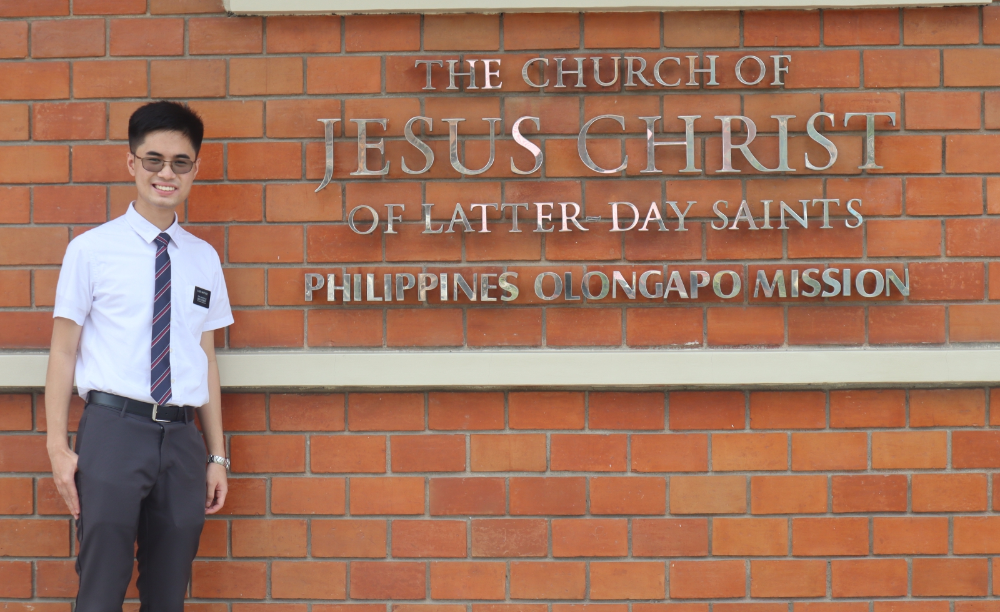
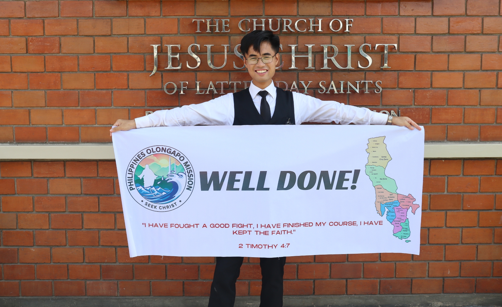
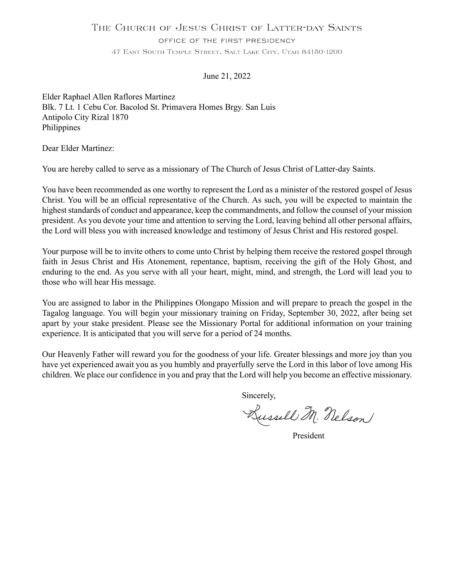

Welcome to my Mission Journey!
This website presents my mission journey through pictures. A trip down memory lane, I dedicate this page to my friends, family, and fellow missionaries.
May this bring back fond memories of our time together!
Some interesting facts about my mission:
- I am in the MTC batch 741
- I had a total of 11 companions.
- I trained 2 missionaries
- I was a district leader for 2 cycles.
- I was a zone leader for 4 cycles.
- I was an assistant to the mission President for 4 cycles.
- While training a new missionary, I took the IELTS and SAT exams.
- I got bit by a stray cat in the church building
- We had a tradition called "Big Mac Thursdays"
- Each companionship in our mission shared 1 phone
- Got the chance to eat exotic meat like snail, rabbit, and duck
- Despite being in a kapampangan speaking area for 6 months, I never picked up the language